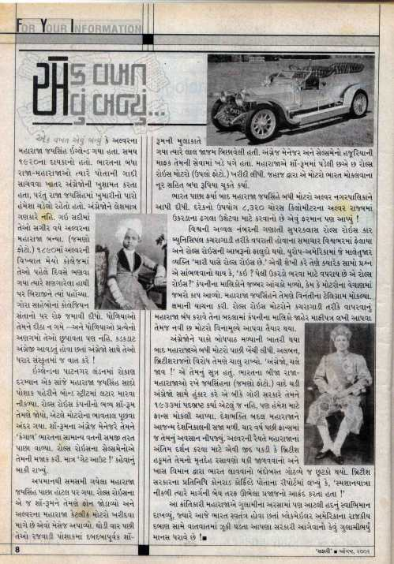

एक बार यूं हुआ कि अलवर महाराजा जयसिंहजी इंगलैण्ड यात्रा पर गए!! उस समय तक भारत के अधिकतर राजा-महाराजा अंग्रेजों से अपनी गद्दी बचाने के लिए अंग्रेजों की खुशामाद कर रहे थे, परन्तु राजा जयसिंहजी उनमें से नहीं थे। देशभक्ति उनमें कूट-कूट कर भरी हुई थी, और देशभक्तिख का खुमार उनमें छाया रहता था। वे अंग्रेजों को बिल्कुल भी भाव नहीं देते थे। 1890 में जब अलवर की प्रख्यात कॉलेज में पहले दिन पढ़ने के लिए गए तब वे श्रंगार किए हाथी पर बैठ कर गए और गोरे साहबों के कॉलेजियन संतानों पर अपनी एक अलग छाप छोड़ी।
एक बार यूं हुआ (एक वार एवु बन्यु)” लोकप्रिय गुजराती मासिक पत्रिका “सफारी” का एक कॉलम है। जिसमें कई मजेदार घटनाओं के बारे में पाठकों को बताया जाता है।, अगस्त 2002 के अंक में ऐसी ही एक घटना का जिक्र है जिसका हिन्दी अनुवाद मैं आगे कर रहा हूँ।
सफारी वह पत्रिका है जिसे पढ़ने और समझने के लिए मैने गुजराती सीखी थी, गुजराती नहीं जानने वालों के लिए आनन्द की बात यह है कि अब यह पत्रिका अंग्रेजी में भी प्रकाशित होती है। उम्मीद है कि शायद कभी ना कभी सम्पादक मंडल हिन्दी पाठकों पर भी नजर-ए-इनायत करेंगे।
गोरे उन्हें बिल्कुल पसन्द नहीं थे और यह नापसन्दगी उन्होने कभी छिपाई भी नहीं। अंग्रेजी के अच्छे जानकार होने और धाराप्रवाह अंग्रेजी बोल सकने के बावजूद अंग्रेजों के साथ संस्कृत में बात करते।
इंगलैण्ड की राजधानी लंदन में यात्रा के दौरान एक शाम महाराजा जयसिंह सादे कपड़ों में बॉन्ड स्ट्रीट में घूमने के लिए निकले और वहां उन्होने रोल्स रॉयस कम्पनी का भव्य शो रूम देखा और मोटर कार का भाव जानने के लिए अंदर चले गए। शॉ रूम के अंग्रेज मैनेजर ने उन्हें “कंगाल भारत” का सामान्य नागरिक समझ कर वापस भेज दिया। शोरूम के सेल्समैन ने भी उन्हें बहुत अपमानित किया, बस उन्हें “गेट आऊट” कहने के अलावा अपमान करने में कोई कोर कसर नहीं छोड़ी। 

अपमानित महाराजा जयसिंह वापस होटल पर आए और रोल्स रॉयस के उसी शोरूम पर फोन लगवाया और संदेशा कहलवाया कि अलवर के महाराजा कुछ मोटर कार खरीदने चाहते हैं।
कुछ देर बाद जब महाराजा रजवाड़ी पोशाक में और अपने पूरे दबदबे के साथ शोरूम पर पहुंचे तब तक शोरूम में उनके स्वागत में “रेड कार्पेट” बिछ चुका था। वही अंग्रेज मैनेजर और सेल्समेन्स उनके सामने नतमस्तक खड़े थे। महाराजा ने उस समय शोरूम में पड़ी सभी छ: कारों को खरीदकर, कारों की कीमत के साथ उन्हें भारत पहुँचाने के खर्च का भुगतान कर दिया।
भारत पहुँच कर महाराजा जयसिंह ने सभी छ: कारों को अलवर नगरपालिका को दे दी और आदेश दिया कि हर कार का उपयोग (उस समय के दौरान 8320 वर्ग कि.मी) अलवर राज्य में कचरा उठाने के लिए किया जाए।
विश्व की अव्वल नंबर मानी जाने वाली सुपर क्लास रोल्स रॉयस कार नगरपालिका के लिए कचरागाड़ी के रूप में उपयोग लिए जाने के समाचार पूरी दुनिया में फैल गया और रोल्स रॉयस की इज्जत तार-तार हुई। युरोप-अमरीका में कोई अमीर व्यक्ति अगर ये कहता “मेरे पास रोल्स रॉयस कार” है तो सामने वाला पूछता “कौनसी?” वही जो भारत में कचरा उठाने के काम आती है! वही?
बदनामी के कारण और कारों की बिक्री में एकदम कमी आने से रोल्स रॉयस कम्पनी के मालिकों को बहुत नुकसान होने लगा। महाराज जयसिंह को उन्होने क्षमा मांगते हुए टेलिग्राम भेजे और अनुरोध किया कि रोल्स रॉयस कारों से कचरा उठवाना बन्द करवावें। माफी पत्र लिखने के साथ ही छ: और मोटर कार बिना मूल्य देने के लिए भी तैयार हो गए।
महाराजा जयसिंह जी को जब पक्का विश्वास हो गया कि अंग्रेजों को वाजिब बोधपाठ मिल गया है तो महाराजा ने उन कारों से कचरा उठवाना बन्द करवाया। परन्तु ब्रिटिशराज का विरोध तो चालू ही रहा। उनका प्रमुख नारा था “अंग्रेजों वापस जाओ”!
भारत के दूसरे राजा-महाराजा भी कहीं जयसिंहजी की देखा देखी अंग्रेजों के सामने अपना सर ना उठाने लगें इस डर से सन 1933 में उन्हें पदभ्रष्ट कर आजनम देशनिकाले की सजा दी और फ्रान्स भेज दिया।
चार वर्ष बाद 1937 में वहीं उनका निधन हो गया। अलवर की जनता ने महाराजा के अन्तिम दर्शनों की ऐसी जिद पकड़ी की स्व. महाराजा के शव को विविध रसायनों से सुरक्षित कर खास विमान से भारत लाना ही पड़ा।
ब्रिटिश प्रतिनिधी कोनराड कोर्फिल्ड ने अपनी रिपोर्ट में लिखा कि “अन्तिम यात्रा के समय रास्ते के दोनों तरफ राज्य की जनता आक्रन्द कर रही थी।“
महान क्रान्तिकारी महाराजा ने गुलामी के समय में भी अपने स्वाभिमान को बरकरार रखा, जब कि भारत स्वतंत्र होने के बाद भी ब्लैकमेलर अमरीका के राजकीय दबाव के सामने बात-बात में झुक जाते नेताओं का मानस कितना गुलामी भरा है।
एक बार फिर से गुजराती से हिन्दी में अनुवाद की कोशिश की है, कुछ भाषाओं में कुछ शब्द ऐसे होते हैं कि उनका एकदम स्टीक अनुवाद करना बहुत मुश्किल होजाता है, फिर भी बहुत कोशिश की है कि एकदम सही अनुवाद कर सकूं। इस सुन्दर जानकारी के लिए थैन्क्स “सफारी”